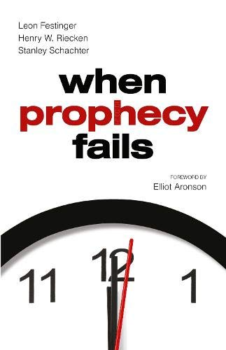

Niende Faglige Seminar
Gard Olav Dietrichson
31-10-2022
Plan for i dag
- Gjennomgå oppgaven
- Tilbakemelding
- Løsningsforslag
- Litt nærmere om deltakende observasjon
- Litt (forhåpentligvis) nyttig tips til lengre oppgave
- Åpen spørretid
- Pause
- Gruppeaktivitet
Litt info
- Elin har lagt ut noen eksempel oppgaver på Canvas, som gir dere en pekepinn på hvordan eksamensspørsmål kan se ut
- Ut i fra disse, ser det litt ut som det ikke blir minuspoeng, men det vet nok Elin bedre
Temaet for i dag er deltakende observasjon som metode
- Litt blandet med begrepet “etnografi”
- Kommer av “å skrive om folk”
- Poenget er at forskeren selv er en del av det de ønsker å studere
- Kommer åpenbart med problemer
Kvalifiseringsoppgaven
Hva skiller deltakende observasjon fra andre datainnsamlingsmetoder
(som survey, intervjuer og fokusgrupper)?
Hva slags type
forskningsspørsmål kan deltakende observasjon brukes til å belyse? Kan
denne datainnsamlingsmetoden brukes til å teste teori/hypoteser? Begrunn
svaret ditt kort.
Bonus Diskusjon
- Kan dere komme på noen av de største utfordringene med deltakende observasjon?
Generell tilbakemelding
- Hva var bra?
- Mange hadde en god beskrivelse av hva som kjennetegnet deltakende observasjon
- Hva var dårlig?
- Mange var kanskje litt for optimistiske når det kommer til teoritesting
- Men det kan argumenteres for at dette har med generelt vitenskapssyn å gjøre
Generell tilbakemelding
- Hva kunne vært enda bedre?
- Det jeg savnet mest var litt mer diskusjon rundt hvordan noe kan være teoritestende.
- Hva slags bevis teller når vi tester teorier?
- Hvordan tester vi dem?
- Hvordan kan deltakende observasjon møte disse kravene?
Løsningsforslag
- Deltakende observasjon handler om
- Å studere folk i sanntid
- Anskaffe førstehåndsinformasjon, om hva folk gjør, sier, og hvordan de samhandler
- Å anskaffe “tykke beskrivelser”
- Begrep gjort kjent av Clifford Geertz
Løsningsforslag
- Teori-testing
- Kan gjøre at vi kommer veldig nære mekanismer
- Men kan ikke strengt talt brukes til å teste generelle hypoteser
- Men hvis vi trekker litt på innsikter fra case
- Kanskje kan de fortsatt gi gode innsikter?
- Teori brukes gjerne aktivt uansett, for å danne noen typer forventninger
Litt nærmere om deltakende observasjon
- Tolking av data krever ofte mye av forskeren
- Men også selve opplegget krever ekstra mye
- Boka skiller det inn i tre områder
- Planlegging - Hva er det beste stedet? Hvordan komme seg dit?
- Gjennomføring - Hvem snakker/følger du med? Hvorfor?
- Transkribering - Hvordan skal du holde trett med all informasjonen?
Problemer
- Veldig ofte vanskelig å opprettholde sin rolle som observatør
- Intervjuereffekten som vi snakket om forrige uke kan komme tilbake her
- Hvordan ta notater av alle tanker som flyr gjennom hodet ditt?
- Det du gjerne er ute etter, er tykke beskrivelser
Litt mer om tykke beskrivelser
- Anbefaler å ta en titt på Clifford Geertz sin artikkel


Litt mer om tykke beskrivelser
Hva er forskjellen mellom en som blunker med ett øye (winking), og en som har rykninger (twitch)?
Litt mer om tykke beskrivelser
Hva om en tredjeperson kommer inn, og gjør narr av den med rykninger, ved å herme etter den?
Litt mer om tykke beskrivelser
- Det finnes altså fenomener som
- Ikke kan beskrives uten kontekst
- Ikke kan abstraheres basert kun på den deskriptive virkeligheten
- Som mister nærmest hele sin betydning, om fjernet fra kontekst
Litt mer om tykke beskrivelser
“Winks upon winks upon winks”
Litt om et kjent tiflelle av deltakende observasjon
- Leon Festingers When Prophecy Fails

For de som ikke er kjent
- Festinger hørte om en dame som snakket med romvesner
- Hun forutså at verden kom til å ta slutt
- Men hennes følgere ville bli reddet
- Hva skjer når disse menneskene blir møtt med bevis på at de tar feil?
Hvordan gikk de frem?
- De infiltrerte kulten deres
- Fem forskere (fra Festinger sitt team) som deltok
- Hemmelig observasjon (litt problematisk)
- Hemmeligheten gjorde forskningsbiten veldig vanskelig
Men de virkelig store problemene
- Festinger sitt team har blitt anklaget for å faktisk forårsake utfallet
- I mange tilfeller var møter bestående av 33% forskere
- Drev de med vilje og “nudget” kulten i en særlig retning?
Til slutt
- Er det noen spørsmål rundt ukas tematikk/oppgave?
Litt om lengre kvalifiseringsoppgave
- Vil gjerne ta litt til tid til å snakke om to aspekter
- Arbeidsprosessen
- Kildebruk
Arbeidsprosessen
- Start med å lage intervju guiden
- Lag et lite ekstra ark til intervju guiden, der du forklarer hvorfor du tok med alle spørsmålene
- Gjør intervjuene
- Skriv rapport
- Funket guiden? Oppfylte spørsmålene det du ville med dem?
Intervju guiden
- Husk å ha med en generell introduksjon
- Samtykke avklaring
- Få med oppvarmingsspørsmål
- Inkluder gjerne potensielle oppfølgningsspørsmål
Gjør intervjuene
- Selve utførelsen er mye opp til dere selv
- Tenk litt over hvor dere vil gjennomføre det
- Gjør en beslutning på om dere vil ta notater i det hele tatt
- Og hva dere vil notere
Kildeføringer
- Valg av stil er opp til dere selv, men vær konsistente
- Vanligste er APA varianter
- Bruk sokogskriv aktivt
- Detaljer trenger ikke være 100% på plass
- Viktigste er: Hvem, Når, Hva, Hvor.
Kildeføringer

Kildeføringer
- Etnografi er studiet av mennesker og deres handlinger i sanntid (Halperin & Heath, 2017)
- Halperin, S. & Heath, O. (2017). Political Research: Methods and Practical Skills (andre utgave). Oxford: Oxford University Press
Kildeføringer
- Hajnal (2001) demonstrates that experience with high profile politicians of minority status (in their case African Americans) is associated with a decreased negative perception of that minority’s ability to perform as a politician.
- Hajnal, Z. L. (2001). White Residents, Black Incumbents, and a declining racial divide. American Political Science Review, Vol. 95, No. 3, pp. 603-617. doi:10.1017/S0003055401003033
Åpen spørretid
- Noe dere har møtt på den siste uken som dere lurer på?
Gruppediskusjon
Generelt forskningsspørsmål: Hvordan bestemmer avisjournalister i Norge hvilke politiske saker de skal dekke før et valg? Og i hvilken grad gir de utenforstående, som partier og PR- byråer, mulighet til å påvirke sine prioriteringer?
Gruppediskusjon
-Lag en plan for en etnografisk studie av dette som inkluderer følgende aspekter: - Hva slags og hvilket sted/miljø («site») skal studeres og hvorfor - Valg av informanter - Tilgang til stedet og «portvoktere» - Rollen til forskeren i felt og forholdet til informantene - Når og hvordan skal forskeren ta feltnotater? - Etiske spørsmål og evt. annet man vil nevne
Neste gang
- Ingen kvalifiseringsoppgave
- Men vi vil snakke om den lengre kvalifiseringsoppgaven
- Gjør dere klar til å gi en liten statusoppdatering
- Forbered spørsmål, utfordringer eller erfaringer